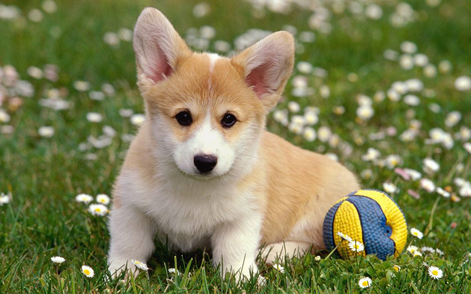
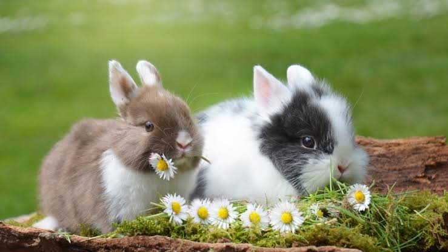

Dogs
Dogs are loyal, playful, and social animals. I like them because they can be loving companions and enjoy spending time with people.
GET TO KNOW THEM
Each animal has its own personality and special qualities.

Dogs are loyal, playful, and social animals. I like them because they can be loving companions and enjoy spending time with people.

Cats are curious and independent. They can be calm one moment and playful the next, which makes them fun to watch.

Rabbits are gentle and adorable animals. Their soft appearance and energetic little hops make them especially charming.
We can help animals by treating them kindly, protecting their habitats, and learning more about the natural world.